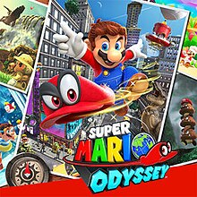

God Of War
Many years after defeating the Olympian gods,Kratos lives with his son Atreus in the realm of Midgard and is often abrasive and passive aggressive towards him. After cremating the body of Faye, Kratos is confronted by a stranger with godly powers. The two battle and Kratos seemingly kills the stranger, after which Kratos and Atreus begin their journey to honor Faye's last wish: to scatter her ashes at the highest peak in the nine realms. Along the way, they encounter the kindly Witch of the Woods, who recognizes Kratos' godhood.

Starfield
Starfield is set in an area that extends outward from the Solar System for approximately 50 light-years called the Settled Systems.Around the year 2310, the two largest factions in the game, the United Colonies and Freestar Collective, engaged in a conflict called the Colony War. The game takes place 20 years after the war, with the major factions enjoying an uneasy peace. The player assumes the role of a customizable character who is a member of Constellation, an organization of space explorers.
.jpeg)
Super Mario Odyssey
Bowser kidnaps Princess Peach from the Mushroom Kingdom and takes her aboard his airship, intent on forcibly marrying her. Mario, also aboard, attempts to rescue her but is knocked off the ship by Bowser's hat after a brief fight and falls into the neighboring Cap Kingdom. With Mario gone, Bowser stomps on Mario's cap and lets it drift into the ship's rear propellers, shredding it to pieces. A piece of the hat is grabbed by Cappy, one of the Cap Kingdom's sentient hat-like creatures called Bonneters. The two meet, and he explains to Mario that Bowser also kidnapped his sister, Tiara, to be used as Peach's wedding tiara. Cappy joins Mario and takes the shape of Mario's cap, providing him with the ability to throw his cap and temporarily capture other creatures and objects and utilize their abilities. They travel to the nearby Cascade Kingdom, recover an airship called the Odyssey, and begin hunting Bowser down.
